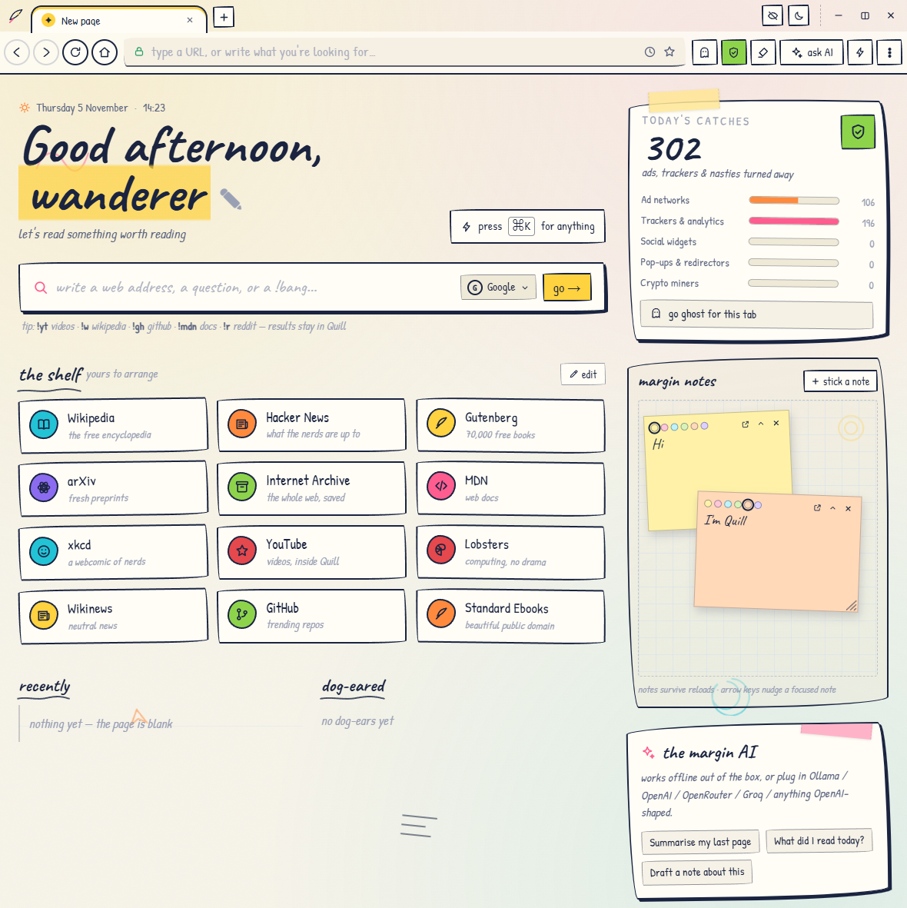
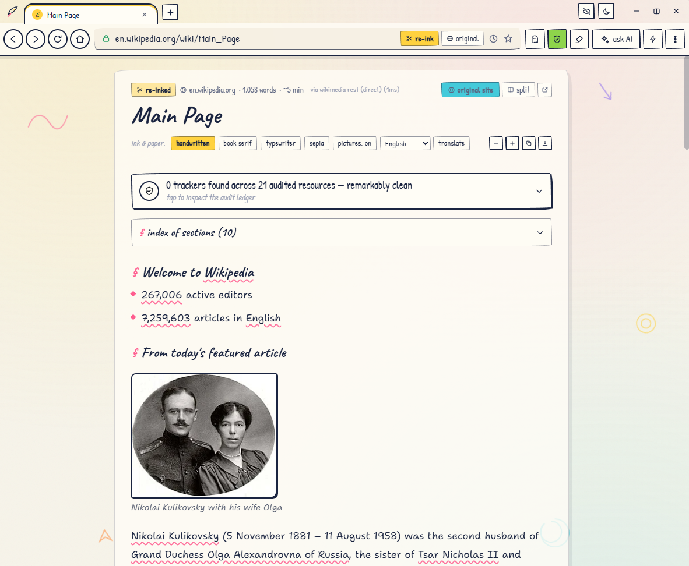
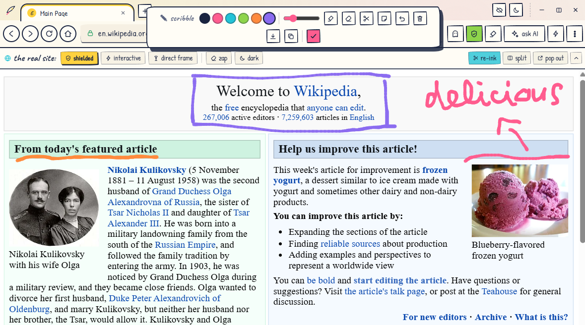
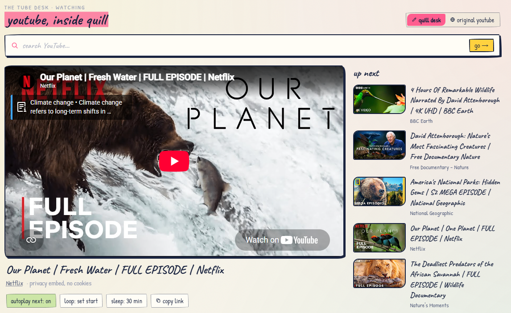

Reading the web should feel like reading. Not dodging pop-ups while an ad reshuffles the page.
One click turns any page into a quiet paper edition you can read, mark up, and keep. No account, nothing tracks you.
download for windowsClick re-ink and the pop-ups, banners and autoplay videos fall away. What stays is clean type on ruled paper. Split it beside the real page or keep the quiet one; Quill remembers your pick for every site.
Highlight a passage and pin it as a note. Scribble with a marker and keep the doodle. Sticky notes float over everything you're doing. The web stops being something you watch and becomes something you use.
Ghost tabs browse without a trace, and a read-later queue holds the good stuff on your start page. Pinned passages and sticky notes stay put. Everything lives on your machine, because there's no cloud to lose it in.
Summarize or translate any page offline, with no account. The built-in scribe reads alongside you, and your text never leaves your machine.



